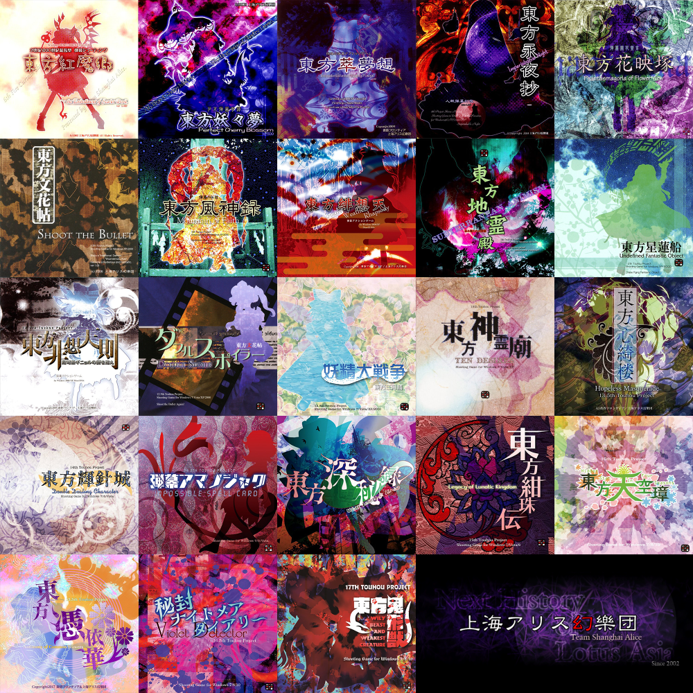

Touhou Project, created by Team Shanghai Alice, is a bullet hell series involving two main characters, Reimu hakurei and Marisa Krisame as they both resolve incidents in the fantasy realm, Gensokyo. Said incidents could be about, Winter lasting much longer, the moon remaining stuck at midnight, or even something basic like a large amount of tourist coming in. This seires is also popular due to the mass amount of fan games, music, or manga's there is. The creator doesn't mind it either which leads to even MORE fan content.

Why I like it personally

I enjoy this series due to how a lot of the cast are based off some religions or stories, besides the two main characters. For example, ALice Margatroid, my favorite character is based off Alice fom Alice in Wonderland but slowly became her own character in the modren games. Another example is how most of the youkai in this series are based off, well youkai. Also i just adore the fan content and how fun it can be. My favoite fan game being, Fantasy Maiden Wars.